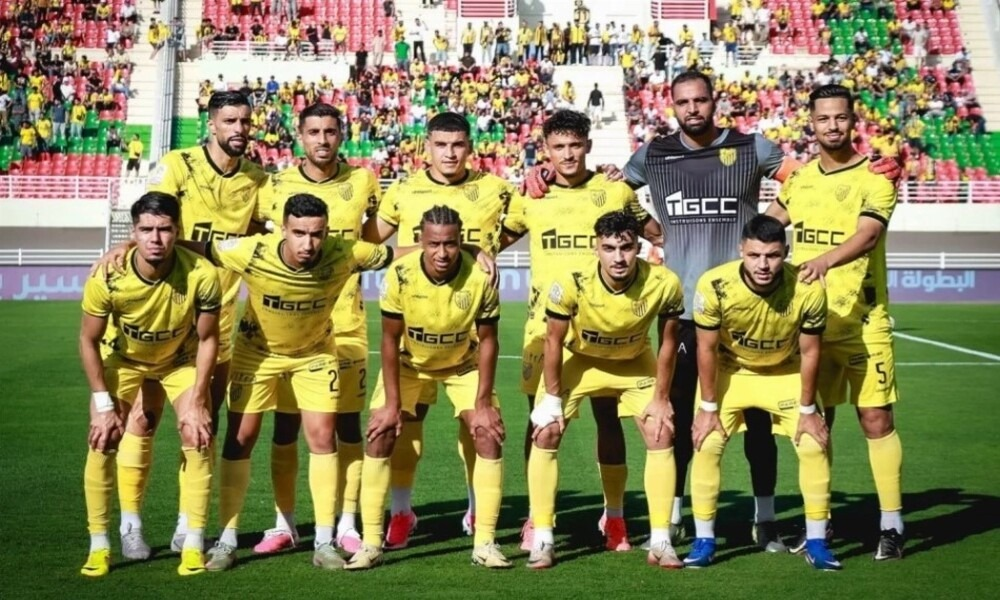

Football
MAS Fès retrouve la Ligue des champions CAF après 14 ans
Le champion du Maroc reçoit Rahimo FC du Burkina Faso ce dimanche à Fès, en match aller du premier tour préliminaire de la Ligue des champions CAF 2026-2027.